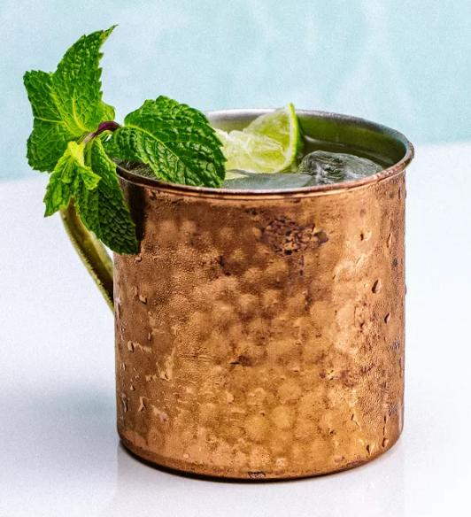

Moscow Mule

The Moscow Mule is a refreshing, delicious vodka-based cocktail that is traditionally served in a copper mug.
Why a copper mug? The copper is a thermal conductor that keeps the cold, iced contents insdie nice and refreshingly cold. The copper is also said to enhance the fizziness and flavor of the ginger beer and citrus.
Ingredients:
- 2 ounces of Vodka
- 1/2 ounce of fresh squeezed lime juice
- 3 ounces of chilled ginger beer
- Lime wedge for garnish
How to prepare:
- Fill a copper mug (or a highball glass if you don't have one) with ice, then pour over your lime juice and vodka
- Top off with the ginger beer
- Stir and garnish with a lime wedge
- Enjoy!
Return Home